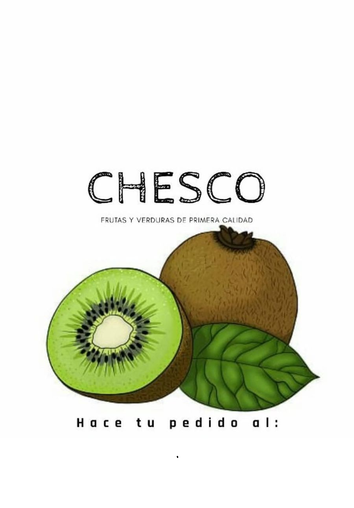

Almacenes y Kioscos
Descubrí almacenes de barrio, minimercados, maxikioscos, verdulerías y fiambrerías en un solo lugar.
Buscar negocio
Encontrá rápidamente el almacén o kiosco que necesitás.
Todos los almacenes y kioscos

¿Tenés un almacén o kiosco?
Publicalo en Nidox y hacé que más personas descubran tu negocio todos los días.